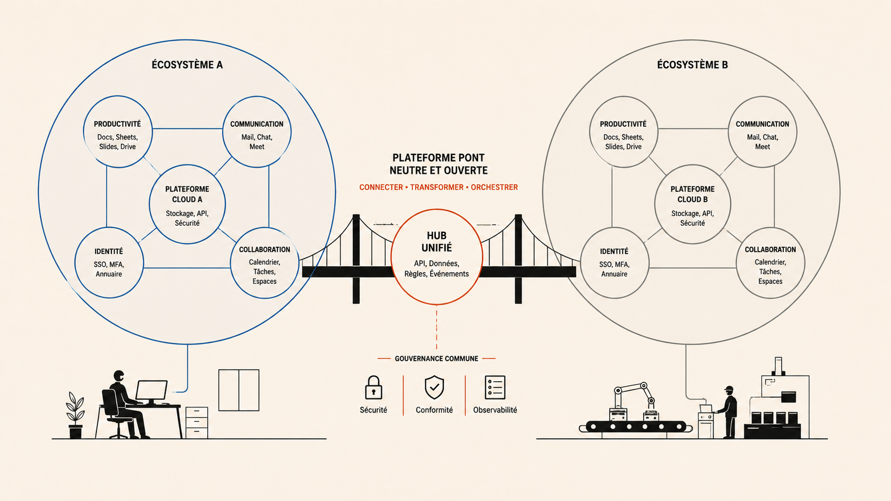

What LumApps Gets Right About Enterprise Selling, and Where the Seams Show
A Gartner Leader with a G2 satisfaction gap. A deliberate acquisition funnel that filters before it sells. And a competitive position that is genuinely hard to replicate, for now.

There is a detail on LumApps's demo registration form that most people scroll past. The form rejects Gmail addresses. You discover this after filling in your name, company, and revenue band and clicking submit. No explanation. Just a field error.
That single UX decision carries more strategic information than the entire homepage. A micro-entrepreneur or freelancer curious about the product gets filtered out before anyone's calendar is touched. A Chief People Officer at a 2,000-person multinational arrives with a corporate domain and sails straight through. The form knows which one it is talking to, and it acts accordingly.
This is what intentional GTM design looks like at the acquisition layer: friction placed precisely where it protects sales capacity. Compare it to the Lucca teardown in this series, where the demo form accepts anyone and routes by revenue band silently after submission, leaving the wrong-fit prospect waiting for a call that never arrives. Two different bets about lead quality, two different moments where the bet becomes visible to the prospect.
One platform. Two completely different jobs.
The homepage addresses whoever is justifying this purchase to a CFO: less time navigating between tools, more time moving work forward, from the frontline to headquarters. That is a C-suite anxiety about productivity fragmentation, and it is the right problem to lead with at that level of the buying committee.
The product that gets deployed is used daily by employees who were not in that room. Their question is simpler: can I find the policy document, check my leave balance, or submit an expense without asking anyone for help. That is a different brief, and it requires different design decisions. LumApps builds for both. The tension between them is where the most useful competitive signal in this teardown lives.
The position that is genuinely hard to replicate
| Competitor | Where they win | Where LumApps wins instead |
|---|---|---|
| Microsoft Viva | Microsoft 365-native organizations; essentially bundled for existing shops | Mixed ecosystems and Google Workspace; organizations that have not standardized on Microsoft |
| Staffbase | Mobile-first frontline communication, newsletter tooling, strategic comms planning | Intranet depth, AI content personalization, enterprise governance and customization |
| Simpplr | Implementation speed, ease of use for content managers, G2 Leader classification | Integration breadth, dual-ecosystem support, enterprise-scale deployment |
| Workvivo | Post-Workplace Meta migrations; recommended by Meta as the default replacement | Enterprise clients who want more depth than a social-first platform delivers |
The rarest capability in LumApps's product is not a feature. It is the clean, deep integration with both Google Workspace and Microsoft 365 simultaneously. Most competitors in this space pick a side. For a multinational that has not standardized on a single suite, that capability removes a trade-off that every other option forces. The Beekeeper acquisition in July 2025 closed the frontline gap that Staffbase had been exploiting most effectively. The Workspace from Meta shutdown in August 2025 created a wave of enterprise organizations needing a replacement platform, and LumApps has been explicit about positioning itself as the destination for those with more complex needs than Workvivo covers.
The number that explains the most
Gartner named LumApps a Magic Quadrant Leader for the third consecutive year in October 2025. Three months earlier, G2's Spring 2026 Grid Report for Employee Intranet classified it as a Niche product. Both are right. They are measuring different things.
G2 Spring 2026 - Employee Intranet - Recommendation rate
Gartner measures what the CIO sees: integration breadth, security posture, roadmap ambition, global deployment capability. LumApps is strong on all of these. G2 measures what the Internal Communications manager experiences on a Tuesday morning when she is trying to publish a campaign to 8,000 employees. At that level, two things come up consistently in independent reviews: feature rollout pace that felt like momentum in the demo becomes a governance challenge in production, and capabilities described as base-package during the sales process become line items at renewal.
Review - G2, February 2026, verified current user
Great but overall some features should be base, not paid.
The buyers are renewing at 99%. The practitioners are 7 points less enthusiastic than they are at the competitor that leads on simplicity. That gap is not a product failure. It is a sales-to-delivery alignment gap, and it lives squarely inside a PMM's scope.
Operator read: The fix is not simplifying the product, which would cost LumApps its enterprise positioning. It is building the assets that sit between the demo and the signature: an implementation effort guide calibrated by company size and deployment scope, realistic time-to-value benchmarks, and a cost model that makes the full picture visible during the sales conversation rather than at renewal. These assets do not reduce complexity. They make complexity legible. In enterprise software, that distinction is the difference between a buyer who feels informed and a practitioner who feels misled. That is a specific job, and it is the kind of work that structured pre-decision intelligence is built to support.
What I could not verify
LumApps does not publish pricing. Figures referenced above are drawn from third-party sources and may not reflect the combined entity following the Beekeeper merger in July 2025.
This teardown is part of an ongoing series applying the same analytical pass to B2B SaaS products I want to understand properly. The gap between how LumApps is recognized by analysts and how it is experienced by practitioners is the kind of signal that only becomes visible when you look at both sources at the same time rather than trusting either one alone. That is the exercise. That is why I do it.